手册简介
足球裁判员需要具备多方面的技能，包括耐力、灵活性、速度，以及对比赛技战术的理解。所有这些能力都可以在针对性训练中得以提高。除此以外，执法足球比赛还伴随着受伤的风险，包括创伤性伤害（traumatic injury）和过度使用伤害（overuse injury）。因此，一个理想的训练计划还应当加入伤病预防的练习。
“FIFA® 11+ 裁判员伤病预防项目” 由国际专家组根据 “FIFA® 11+ 伤病预防项目” 以及裁判员特有的伤病情况进行开发，形成一套完整的热身方案，应当取代训练前的常规热身活动。
著名的《英国医学杂志（British Medical Journal）》于2008年发布的一项科学研究表明，使用 FIFA 11+ 进行热身的青少年足球队受伤风险明显低于沿用常规热身的球队。每周至少进行两次 FIFA 11+ 练习的球队在训练中的受伤减少37%，比赛中的受伤减少29%；严重受伤减少近50%。
与上届世界杯（2006 & 2007）相比，在最近的世界杯赛场上（2010 & 2011），实施基本的伤病预防项目降低了男女 FIFA 裁判员所遭受的非接触性比赛受伤的发生率。

《FIFA 11+（裁判员版）》结构
《FIFA 11+（裁判员版）》分为三个部分，共 18 项练习，应在每次训练开始时按照指定顺序进行。
这些练习侧重于裁判员和助理裁判员的特定活动模式。

第一部分：跑动练习
第二部分：针对性练习，重点锻炼核心力量、腿部力量、平衡性、力量增强以及灵活性。每项练习都有两个不同难度的动作。
第三部分：跑动练习
该训练的关键在于使用正确的技术动作完成所有练习。要充分关注正确的身体姿势和良好的身体控制，如直腿对齐、膝盖与脚尖的相对位置、落地缓冲等。
身体姿态
✅ 正确示范

🚫 错误示范

伤病预防的关键要素
对足球裁判员和助理裁判员而言，有效的伤病预防项目的关键要素包括核心稳定性、神经肌肉控制与平衡能力、腿后肌群的离心训练、力量增强以及灵活性练习。
📌 核心训练
“核心”是一个功能单位，包括躯干肌肉（腹肌、背部伸肌）和盆髋部位的肌肉。保持核心稳定性是充分发挥下肢（尤其是膝盖）能力的关键之一。足球裁判员必须具备足够的髋部和躯干肌肉力量和神经肌肉控制力，以保证核心稳定性。越来越多的科学研究表明，核心稳定性对伤病预防有着重要意义。
📌 神经肌肉控制与平衡能力
神经肌肉控制并非一个单一的实体，而是复杂的相互作用体系，涉及不同的肌肉活动（静态动作、动态动作、反应性动作）、肌肉激活（离心收缩多于向心收缩）、多关节肌肉协调、稳定性、身体姿态、平衡能力和预判能力。大量的实证经验和科学研究表明，针对特定运动的神经肌肉训练能够有效预防膝关节和踝关节伤病。
📌 力量增强与灵活性练习
“增强式练习”是指让肌肉在尽可能短的时间内达到最大力量的练习。在许多运动技能中，肌肉离心收缩后会迅速发生向心收缩。因此，必须针对运动员所从事的体育项目，使用特定的功能性练习，强调肌肉动作的快速变化，帮助运动员做好准备。增强式练习的目的是缩短肌肉离心收缩和向心收缩的间隔时间。
从生物力学角度看，增强式练习能够正确地训练特定的运动模式，从而增强肌肉、肌腱和韧带的能力。力量增强和灵活性练习是伤病预防项目的重要组成部分，已被证明能够有效预防膝关节和踝关节损伤，特别是前交叉韧带损伤。
激励与执行
教练（讲师）应当意识到伤病预防项目的重要性及其训练效果。尽管该项目不能预防所有伤病，但定期的预防性锻炼能够显著减少膝盖损伤、脚踝扭伤、肌肉损伤和过度使用问题。
教练（讲师）应当鼓励裁判员学习《FIFA 11+（裁判员版）》并进行规律、正确的练习。研究表明，准确完成练习动作是保证训练效果的关键。
最简单的方法是将《FIFA 11+（裁判员版）》中的练习作为每次训练开始时的常规热身活动。
另外，如果裁判员没有常规的赛前活动，第一部分和第三部分的跑动练习也可以用作赛前热身。
💡 小贴士
当然，专业的体能教练（讲师）还可以对练习动作进行调整。
如何使用《FIFA 11+（裁判员版）》？
首先，强调伤病预防的重要性，让所有裁判员都深刻认识到这一点，然后再开始讲解和指导具体练习动作。
有效开展此项目活动的关键在于从“级别一”做起，专注于正确完成练习动作；仔细纠正所有错误。良好的身体姿态至关重要，有助于实现更好的神经肌肉控制和训练效果。在裁判员能够正确执行动作之后，可以逐步增加持续时间和重复次数，直至达到项目所建议的强度。
以下步骤有助于指导动作：
- 简要讲解并演示该动作；
- 指导裁判员进行练习，并提供整体反馈/纠正；
- 与所有裁判员讨论出现的问题，并重新演示动作（可邀请一位动作标准的裁判员配合演示）；
- 指导裁判员再次进行练习，针对个人提供反馈/纠正。
以上方法特别适用于第二部分的练习动作。第一部分和第三部分的跑动练习所需的讲解和学习时间应该相对较少。一般来说，裁判员大概需要至少两到三次训练，才能正确完成《FIFA 11+（裁判员版）》（级别一）的所有练习动作。
进阶练习
裁判员应当从"级别一"开始练习。在裁判员/助理裁判员能够毫无困难地达到指定的时间和数量标准之后，便可以开始进行“级别二”的练习。
理想情况下，是否开始“级别二”练习应当视每位裁判员的情况单独决定。但在集体训练中，为简单起见，所有裁判员可以在三到四周后同时开始“级别二”练习。
📌 小贴士
对于所有的练习，正确的执行非常重要。因此，教练（讲师）应当对训练加以监督，必要时纠正裁判员的动作。
场地设置
训练场地由六对平行的标志筒组成，横向、纵向间距均为 4 或 6 米（总长 20 或 24 米）。
两名裁判员同时从第一对标志筒出发，沿标志筒内侧慢跑，在此途中完成各项练习。经过最后一个标志筒后，沿场地外侧跑回；跑回的速度可随着热身的推进逐渐增加。

参考文献
-
Bizzini M, Junge A, Bahr R, Helsen W, Dvorak J. Injuries and musculoskeletal complaints in referees and assistant referees selected for the 2006 FIFA World Cup: retrospective and prospective survey. Br J Sports Med. 2009 Jul; 43(7):490-7. Epub 2008 Jul 4.
-
Bizzini M, Junge A, Bahr R, Dvorak J. Female soccer referees selected for the FIFA Women World Cup 2007: survey of injuries and musculoskeletal problems. Br J Sports Med. 2009 Dec; 43(12):936-42. Epub 2008 Oct 16.
-
Soligard T, Myklebust G, Steffen K, Holme I, Silvers H, Bizzini M, Junge A, Dvorak J, Bahr R, Andersen TE. Comprehensive warm-up programme to prevent injuries in young female footballers: cluster randomised controlled trial. BMJ. 2008 Dec 9; 337%:a2469. doi: 10.1136/bmj.a2469.
-
Soligard T, Nilstad A, Steffen K, Myklebust G, Holme I, Dvorak J, et al. Compliance with a comprehensive warm-up programme to prevent injuries in youth football. Br J Sports Med 2010; 44(11):787-793.
-
Castagna C, Abt G, Dttavio S. Physiological aspects of soccer refereeing performance and training. Sports Med. 2007; 37% (7):625-46. Review.
-
Weston M, Castagna C, Impellizzeri FM, Bizzini M, Williams AM, Gregson W. Science and Medicine Applied to Soccer Refereeing: An Update. Sports Med. 2012 Jul 1; 42(7):615-31. doi: 10.2165/11632360-000000000-00000. Review.
-
Bizzini M, Junge A, Dvorak. The FIFA 11+ Manual. FIFA, Zich, 2011.
第一部分 跑动练习
1 直线跑
2 双人绕圈跑
3 Z 字侧滑步
4 快速跑
主裁–5 S 形障碍跑
主裁–6 连续转身跑
助理裁判员–5 左右侧滑步交替
助理裁判员–6 交叉步
直线跑
沿场地内侧直接慢跑至最后一个标志筒。沿外侧返回时稍稍提速。
✌️ 本练习需完成两次。
⚠️ 注意事项
- 上半身保持挺直；
- 臀部、膝盖和脚保持一直线。
❗️ 切忌膝盖内扣。
➿ 跑动路线
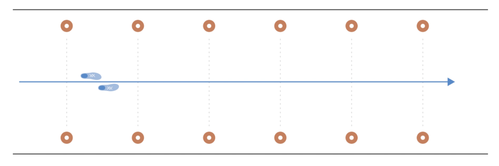
🎬 动作示范
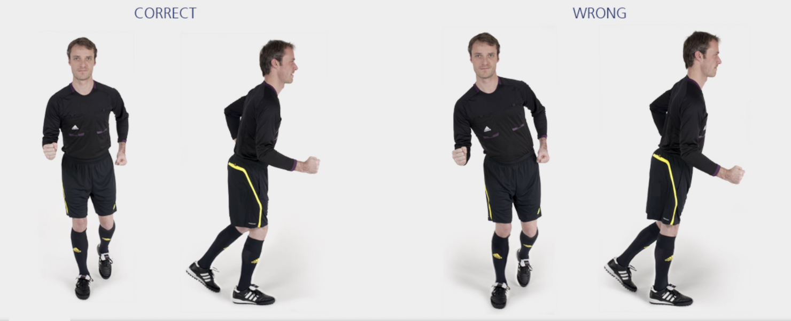
双人绕圈跑
两名裁判员同时出发，慢跑至下一个标志筒；横向侧滑步至与同伴相遇，围绕同伴侧滑步一圈（期间不改变身体朝向），然后继续侧滑步返回本方标志筒。慢跑至下一个标志筒并重复上述练习。经过所有标志筒后，沿场地外侧慢跑返回。
✌️ 本练习需完成两次。
⚠️ 注意事项
- 臀部、膝盖略微弯曲，将身体重心置于前脚掌；
- 上半身保持挺直。
❗️ 切忌膝盖内扣。
➿ 跑动路线
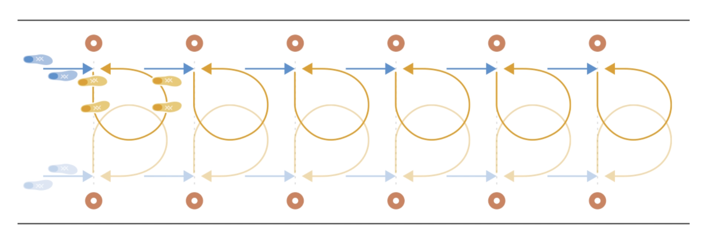
🎬 动作示范
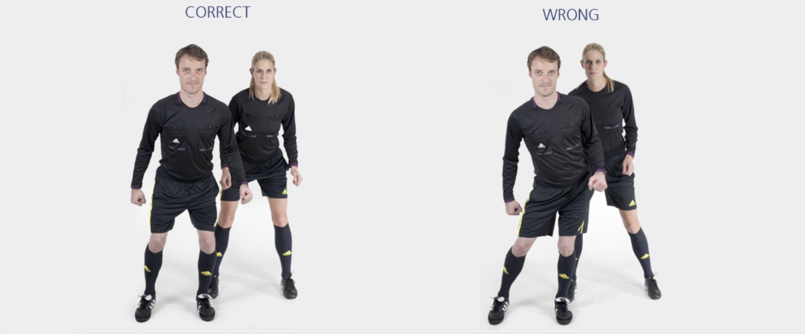
Z 字侧滑步
沿 Z 字形侧滑步经过所有标志筒；每到一个标志筒改变滑步方向；保持跑动直至最后一个标志筒。
✌️ 本练习需完成两次。
⚠️ 注意事项
- 保持背部挺直，上半身前倾；
- 臀部、膝盖略微弯曲，将身体重心置于前脚掌；
- 改变滑步方向时动作保持流畅。
❗️ 切忌膝盖内扣。
➿ 跑动路线
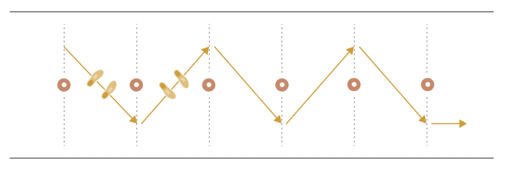
🎬 动作示范
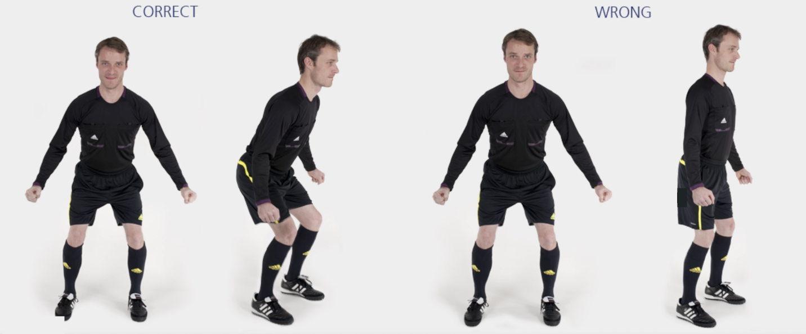
快速跑
快速向前跑两个标志筒，快速后退跑一个标志筒。臀部、膝盖略微弯曲。
重复上述练习——前进两个标志筒、后退一个标志筒。经过所有标志筒后，沿场地外侧慢跑返回。
✌️ 本练习需完成两次。
⚠️ 注意事项
- 上半身保持挺直；
- 臀部、膝盖和脚保持一直线。
❗️ 切忌膝盖内扣。
➿ 跑动路线
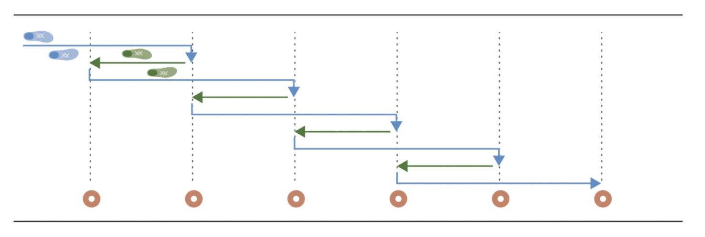
🎬 动作示范
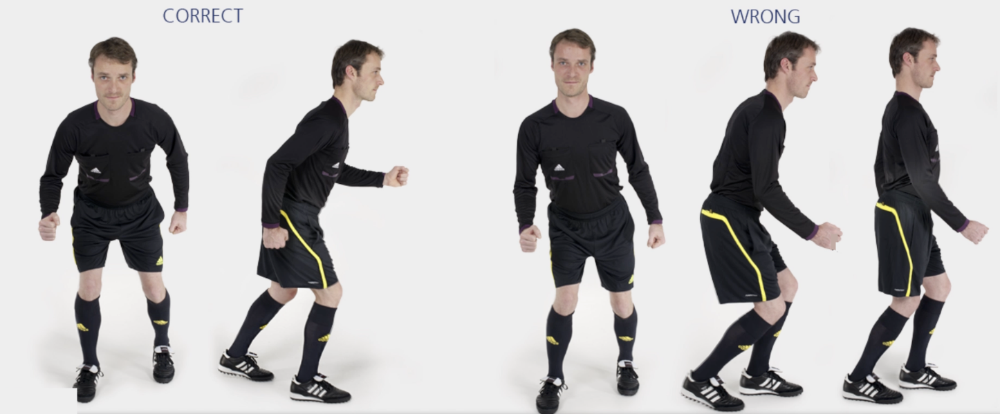
主裁 – S 形障碍跑
向前 S 形慢跑至最后一个标志筒，沿场地外侧慢跑返回。
接着，向后 S 形慢跑至最后一个标志筒，沿场地外侧慢跑返回。
⚠️ 注意事项
- 上半身保持挺直；
- 臀部、膝盖和脚保持一直线。
❗️ 切忌膝盖内扣。
➿ 跑动路线
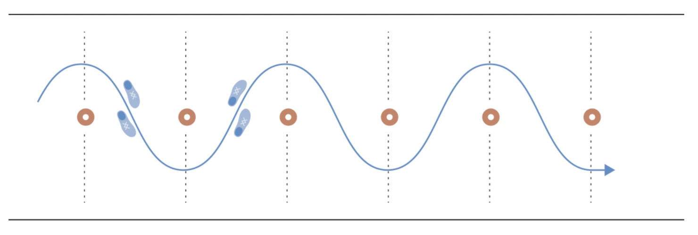
🎬 动作示范
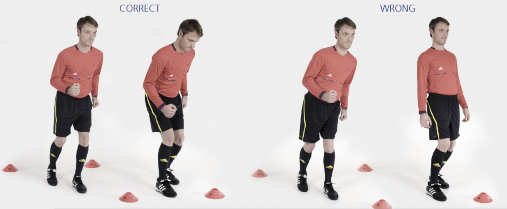
主裁 – 连续转身跑
出发慢跑至下一个标志筒，减速并转身 180 度；向后慢跑至下一个标志筒，转身 180 度。重复上述练习。
经过所有标志筒后，沿场地外侧慢跑返回。
✌️ 本练习需完成两次。
⚠️ 注意事项
- 上半身保持挺直；
- 臀部、膝盖和脚保持一直线；
- 转身时动作保持流畅。
❗️ 切忌膝盖内扣。
➿ 跑动路线
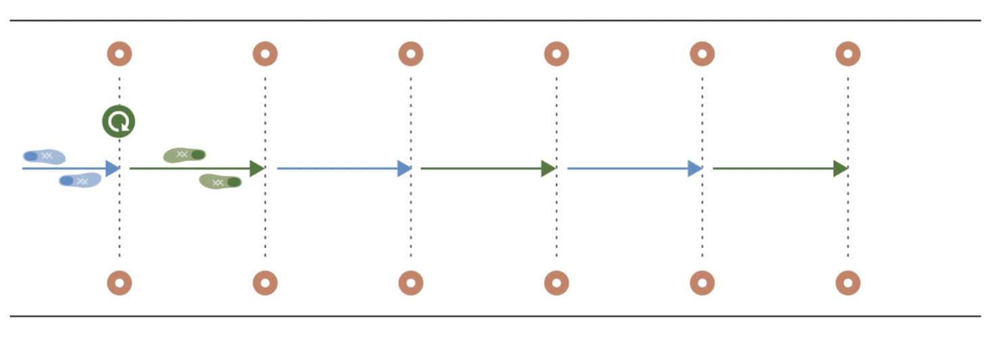
🎬 动作示范
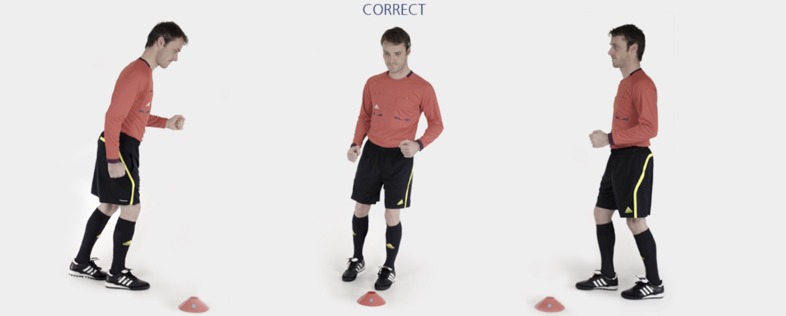
助理裁判员 – 左右侧滑步交替
沿场地线侧向滑步，每到一个标志筒改变滑步方向，直至最后一个标志筒。经过所有标志筒后，沿场地外侧慢跑返回。
✌️ 本练习需完成两次。
⚠️ 注意事项
- 臀部、膝盖略微弯曲，将身体重心置于前脚掌；
- 转身时动作保持流畅；
- 上半身保持挺直。
❗️ 切忌膝盖内扣。
➿ 跑动路线
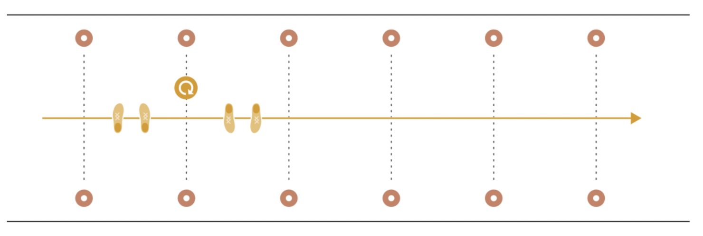
🎬 动作示范
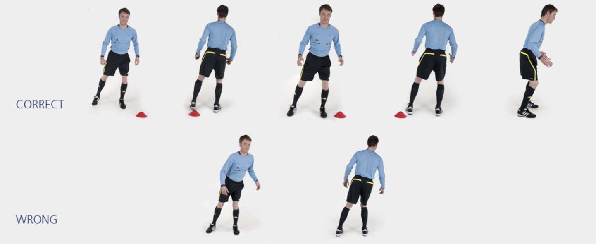
助理裁判员 – 交叉步
沿场地线侧向交叉步至最后一个标志筒，沿场地外侧慢跑返回。
改变身体朝向，重复上述练习。
⚠️ 注意事项
- 保持骨盆水平、核心稳定；
- 双臂平举，与场地线平行；
- 膝盖微曲，将身体重心置于前脚掌。
❗️ 切忌膝盖内扣。
➿ 跑动路线
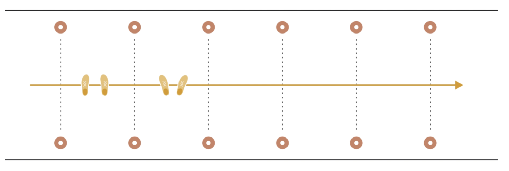
🎬 动作示范
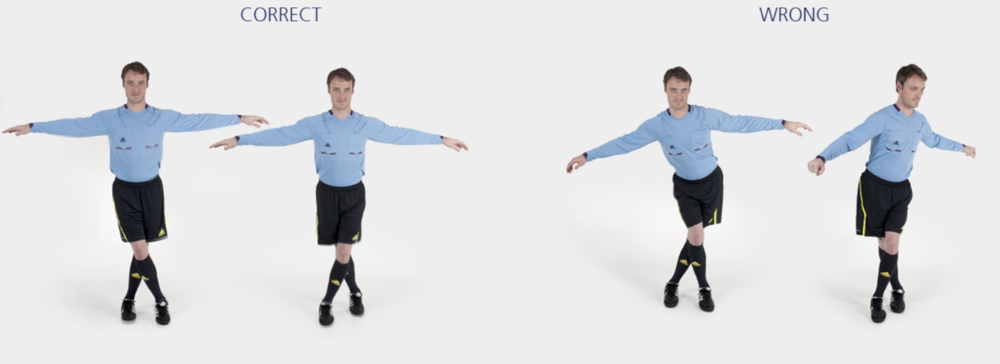
第二部分 力量增强与平衡练习
Level 1 | Level 2 |
|---|---|
| 1 俯卧支撑两腿交替抬举 | 1 俯卧支撑单腿上提 |
| 2 动态侧支撑 | 2 侧支撑单腿上提 |
| 3 臀桥 | 3 臀桥 |
| 4 腘绳肌练习 | 4 腘绳肌练习 |
| 5 小腿肌肉练习 | 5 小腿肌肉练习 |
| 6 深蹲跳 | 6 小跳 |
| 主裁–7 单腿支撑 | 主裁–7 十字单腿跳 |
| 主裁–8 前弓步 | 主裁–8 弓步跳 |
| 助理裁判员–7 45° 侧弓步 | 助理裁判员–7 90° 侧弓步 |
| 助理裁判员–8 侧向跳跃 | 助理裁判员–8 侧向跳跃 |
力量增强与平衡练习（级别一）
2 动态侧支撑
3 臀桥
4 腘绳肌练习
5 小腿肌肉练习
6 深蹲跳
主裁–7 单腿支撑
主裁–8 前弓步
助理裁判员–7 45° 侧弓步
助理裁判员–8 侧向跳跃
俯卧支撑两腿交替抬举
本练习旨在增强核心肌群，对保持身体在各类活动中的稳定性至关重要。
起始动作： 俯卧，使用前臂和脚支撑身体。
练习动作： 提起上半身、骨盆和双腿直至身体从头到脚成一直线。肩胛骨向脊柱收拢，使背部平直。手肘位于肩膀正下方。收紧腹部和臀部肌肉。两腿交替抬起，每次保持 2 秒，共持续 30–60 秒。完成后返回起始动作。
次数： 1 组（ 30–60 秒）
⚠️ 注意事项
- 头部、肩部、背部、骨盆成一直线；
- 手肘位于肩膀正下方。
❌ 头部后仰
❌ 摇晃或拱起背部
❌ 抬高臀部
✅ 骨盆保持稳定，不可倾斜
🎬 动作示范
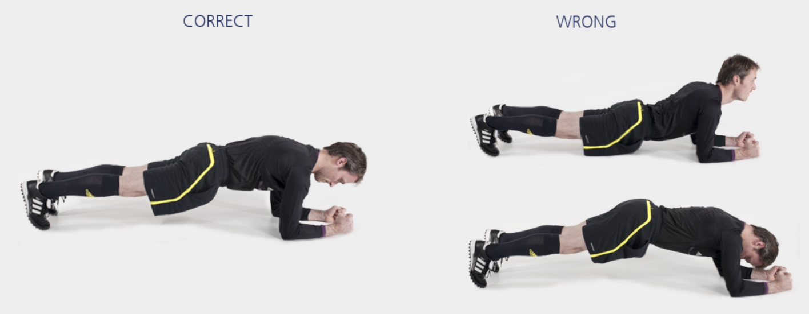
动态侧支撑
本练习旨在增强侧面核心集群，对保持身体在各类活动中的稳定性至关重要。
起始动作： 侧卧，两腿伸直，使用前臂支撑身体。
练习动作： 提起骨盆与双腿，仅下侧脚在地面上保持支撑；身体从上侧肩膀到上侧脚成一直线。接着将臀部向地面靠近，然后再次提起。重复 20–30 秒。支撑手的手肘应位于肩膀正下方。短暂休息后，换另一侧重复上述练习。
次数： 1 组（每侧 20–30 秒）
⚠️ 注意事项
- 从正面看，上侧肩膀、臀部和上侧腿应成一直线；
- 从上面看，整个身体应成一直线；
- 支撑手的手肘应位于肩膀正下方。
❌ 头部倚靠肩膀
❌ 肩膀或骨盆向前后倾斜
🎬 动作示范
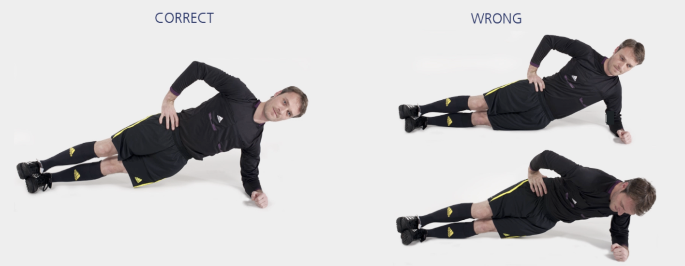
臀桥
本练习旨在增强背部与臀部肌群，对保持身体在各类活动中的稳定性至关重要。
起始动作： 仰卧，膝关节弯曲成90°，双脚平放于地面。
练习动作： 双脚着地，骨盆上提至身体成一直线。收紧腹部和臀部肌肉。两腿交替抬起并伸直，每次保持 1–2 秒，共持续 20–30 秒。完成后返回起始动作。
次数： 1 组（ 20–30 秒）
⚠️ 注意事项
- 抬起骨盆后，保持身体成一直线；
- 骨盆保持稳定，不可倾斜；
- 支撑脚位于膝盖下方。
❌ 摇晃或拱起背部
🎬 动作示范
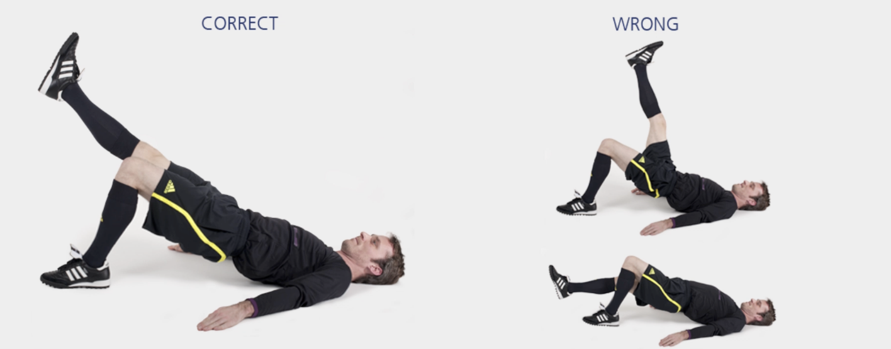
腘绳肌练习
本练习旨在增强大腿后侧肌群。
起始动作： 双膝与臀部同宽，跪在柔软的表面上；双臂交叉置于胸前。同伴跪在裁判员身后，双手抓住其脚踝上方，用身体重量将小腿压在地面上。
练习动作： 身体从头部到膝盖始终成一直线；缓缓向前倾斜，利用大腿后侧肌肉（腘绳肌）力量尽可能保持这一姿势。当无法再保持该姿势时，双手伸向地面进行缓冲，呈俯卧撑姿势。
次数： 1 组（ 7–10 次）
⚠️ 注意事项
- 同伴需将裁判员的小腿牢牢压向地面；
- 裁判员的头、上身和大腿应成一直线；
- 倾斜过程中只有膝关节可以活动；
- 刚开始时应缓慢进行此练习；一旦适应了该动作，就可以加快练习速度。
❌ 头部后仰
❌ 弯曲臀部
🎬 动作示范
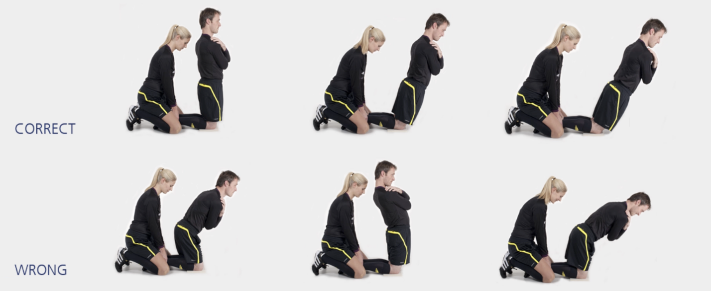
小腿肌肉练习
本练习旨在增强小腿肌群（和跟腱）。
起始动作： 单腿站立，膝盖伸直。
练习动作： 脚尖站立，身体在竖直方向上缓慢降低/上提。持续 20–30 秒，换另一只脚重复上述练习。裁判员可以使用棍子辅助支撑，也可以在保持平衡的情况下单独进行练习。
次数： 1 组（每只脚 20–30 秒）
⚠️ 注意事项
- 保持身体成一直线；
- 从正面看，支撑腿一侧的臀部、膝盖和脚应成一直线。
❌ 摇晃或拱起背部
❌ 弯曲支撑腿一侧的膝盖
✅ 骨盆保持稳定，不可倾斜
🎬 动作示范
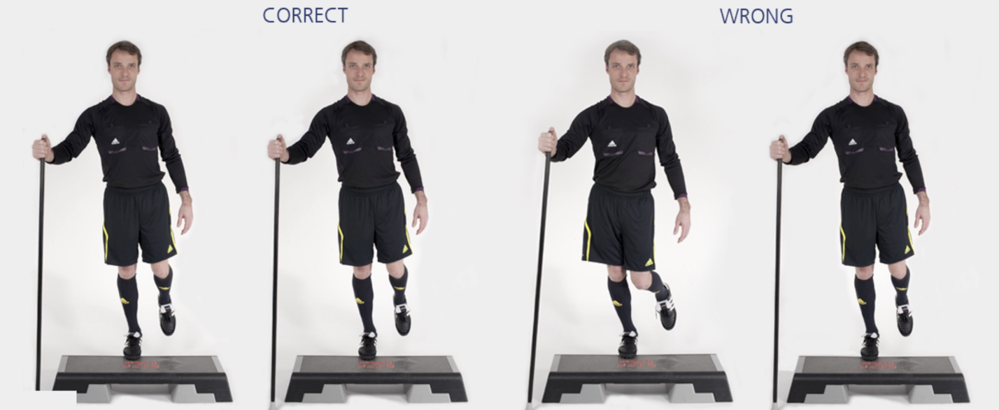
深蹲跳
本练习旨在增强跳跃能力和身体控制。
起始动作： 双脚站立，与肩同宽，双手置于腰间。
练习动作： 缓慢弯曲髋关节、膝关节与踝关节，直至膝盖弯曲 90 度。上半身向前倾斜。保持该姿势 1 秒，然后尽力向上跳起。跳起时，伸直整个身体。落地时前脚掌轻轻着地，同时缓慢弯曲髋关节、膝关节和踝关节。重复 20–30 秒。
次数： 1 组（ 20–30 秒）
⚠️ 注意事项
- 从正面看，两侧臀部、膝盖和腿应成两条平行线；
- 同时弯曲髋关节、膝关节和踝关节，并让上半身向前倾斜；
- 双脚同时起跳，落地时前脚掌轻轻着地；
- 与跳跃高度相比，起跳力度和落地缓冲更加重要。
❗️ 切忌膝盖内扣。
❗️ 落地时不要伸直膝盖或用脚后跟着地。
🎬 动作示范
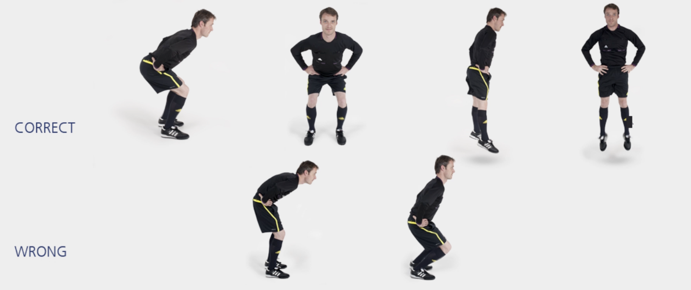
主裁 – 单腿支撑
本练习旨在增强腿部肌肉协调与平衡能力。
起始动作： 单腿站立，略微弯曲膝盖和臀部，使上半身稍向前倾斜。从正面看，支撑腿一侧的臀部、膝盖和脚应在一条直线上。另一条腿稍稍抬起伸向支撑腿后侧。
练习动作： 身体保持平衡，抬起的腿绕支撑腿做半圆形绕圈，持续 30 秒。然后换另一条腿重复上述练习。
次数： 1 组（每侧 30 秒）
⚠️ 注意事项
- 从正面看，支撑腿一侧的臀部、膝盖和脚应在一条直线上；
- 支撑腿一侧的髋关节和膝关节略微弯曲；
- 身体重心置于前脚掌；
- 上半身面向前方，保持稳定。
❗️ 切忌膝盖内扣。
❗️ 骨盆保持水平，不可倾斜。
🎬 动作示范
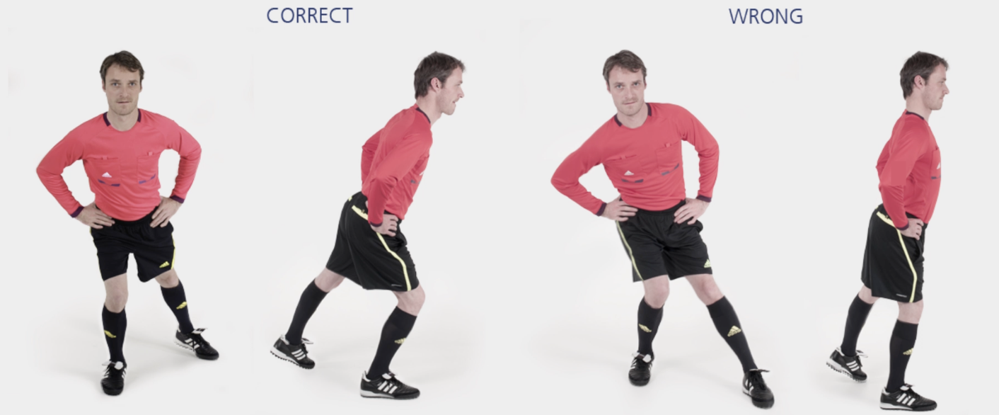
主裁 – 前弓步
本练习旨在锻炼大腿后侧肌群和臀部肌群，同时增强身体控制。
起始动作： 双脚站立，与肩同宽，双手置于腰间。
练习动作： 开始弓步时，缓慢弯曲臀部和膝盖，直到前膝弯曲 90 度。前侧的膝盖位置不可超出脚趾。保持上半身挺直、骨盆水平。然后回到起始位置，换另一条腿向前弓步。
次数： 1 组（每侧 10 次）
⚠️ 注意事项
- 前侧膝盖应弯曲至 90 度；
- 上半身保持挺直；
- 骨盆保持稳定；
- 前侧的膝盖位置不可超出脚趾。
❌ 膝盖内扣
❌ 上半身向前弯曲
❌ 扭转或倾斜骨盆
🎬 动作示范
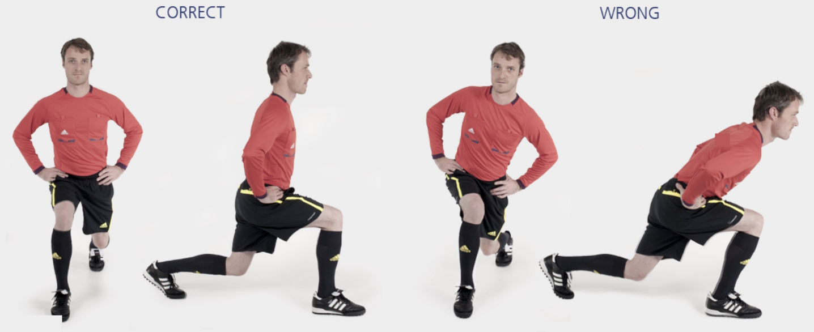
助理裁判员 – 45° 侧弓步
本练习旨在锻炼髋部和臀部肌群，同时增强身体控制。
起始动作： 双脚站立，与肩同宽，双手置于腰间。
练习动作： 缓慢向侧面弓步。开始弓步时，缓慢弯曲臀部和膝盖，直到支撑侧的膝盖弯曲约 45 度。保持该姿势 1-2 秒，然后回到起始位置。向另一侧进行弓步。每一侧弓步 10 次。
次数： 1 组（每侧 10 次）
⚠️ 注意事项
- 支撑侧膝盖应弯曲至 45 度;
- 上半身保持挺直;
- 骨盆保持水平。
❌ 膝盖内扣
❌ 上半身向前弯曲
❌ 扭转或倾斜骨盆
🎬 动作示范
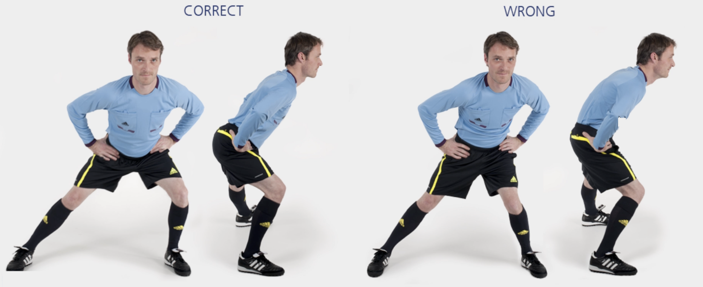
助理裁判员 – 侧向跳跃
本练习旨在增强单腿跳跃能力和身体控制。
起始动作： 单腿站立，略微弯曲髋关节、膝关节和踝关节，上半身向前倾斜。
练习动作： 支撑腿发力，向另一侧跳跃约 1 米，换腿支撑。落地时前脚掌轻轻着地，同时弯曲髋关节、膝关节和踝关节。保持该姿势约 1 秒，然后再向另一侧跳跃。上半身面向前方，保持稳定；骨盆保持水平。重复 20–30 秒。
次数： 1 组（ 20–30 秒）
⚠️ 注意事项
- 从正面看，支撑腿一侧的臀部、膝盖和脚应在一条直线上;
- 落地时前脚掌轻轻着地，同时弯曲髋关节、膝关节和踝关节，上半身向前倾斜;
- 上半身面向前方，保持稳定;
- 骨盆保持水平，不可旋转或倾斜。
❌ 膝盖内扣
❌ 旋转上半身
🎬 动作示范
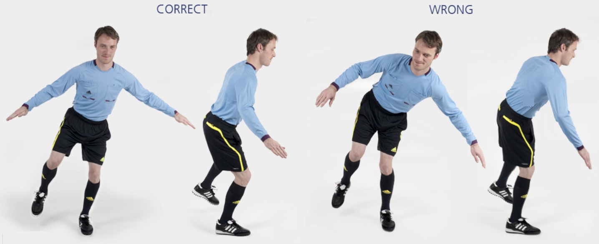
力量增强与平衡练习（级别二）
1 俯卧支撑单腿上提
2 支撑单腿上提
3 臀桥
4 腘绳肌练习
5 小腿肌肉练习
6 小跳
主裁–7 十字单腿跳
主裁–8 弓步跳
助理裁判员–7 90° 侧弓步
助理裁判员–8 侧向跳跃
俯卧支撑单腿上提
本练习旨在增强核心肌群，对保持身体在各类活动中的稳定性至关重要。
起始动作： 俯卧，使用前臂和脚支撑身体。
练习动作： 提起上半身、骨盆和双腿直至身体成一直线。肩胛骨向脊柱收拢，使背部平直。手肘位于肩膀正下方。收紧腹部和臀部肌肉。抬起一条腿，保持 20-30 秒。返回起始动作，短暂休息后，换另一条腿重复上述练习。
次数： 1 组（每侧 20-30 秒）
⚠️ 注意事项
- 头部、肩部、背部、骨盆成一直线；
- 手肘位于肩膀正下方。
❌ 头部后仰
❌ 摇晃或拱起背部
✅ 骨盆保持稳定，不可倾斜
🎬 动作示范
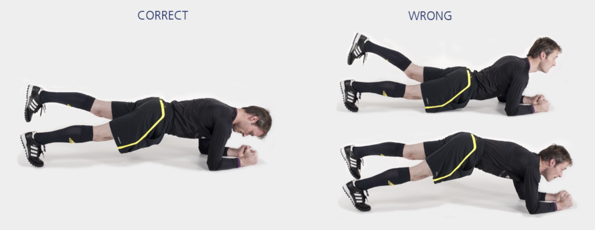
侧支撑单腿上提
本练习旨在增强侧面核心集群，对保持身体在各类活动中的稳定性至关重要。
起始动作： 侧卧，两腿伸直，使用前臂和小腿支撑身体。
练习动作： 提起骨盆与双腿，仅下侧脚在地面上保持支撑；身体从上侧肩膀到上侧脚成一直线。抬起上侧腿，然后再缓慢放下。重复 20–30 秒。支撑手的手肘应位于肩膀正下方。短暂休息后，换另一侧重复上述练习。
次数： 1 组（每侧 20–30 秒）
⚠️ 注意事项
- 从正面看，上侧肩膀、臀部和上侧腿应成一直线；
- 从上面看，整个身体应成一直线；
- 支撑手的手肘应位于肩膀正下方。
❌ 头部倚靠肩膀
❌ 肩膀或骨盆向前后倾斜
✅ 骨盆保持稳定，不可向下倾斜
🎬 动作示范
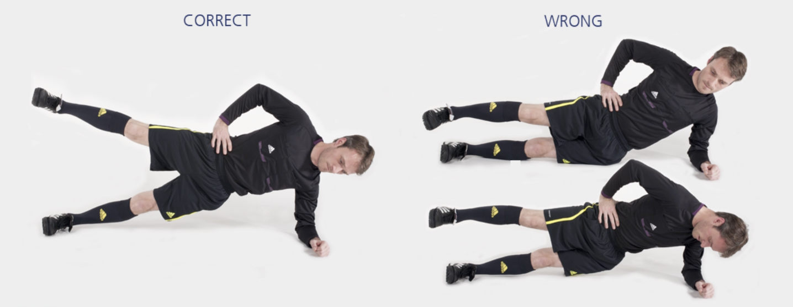
臀桥
本练习旨在增强背部与臀部肌群，对保持身体在各类活动中的稳定性至关重要。
起始动作： 仰卧，膝关节弯曲成90°，双脚平放于地面。
练习动作： 一条腿抬起并伸直，骨盆上提至身体成一直线；收紧腹部和臀部肌肉。保持 1–2 秒后回到起始动作（一条腿始终抬起）。然后再次提起骨盆、保持、返回，持续 20–30 秒。短暂休息后，换一条腿重复上述练习。
次数： 1 组（每侧 20–30 秒）
⚠️ 注意事项
- 抬起骨盆后，保持身体成一直线；
- 骨盆保持稳定，不可倾斜；
- 支撑脚位于膝盖下方。
❌ 摇晃或拱起背部
🎬 动作示范
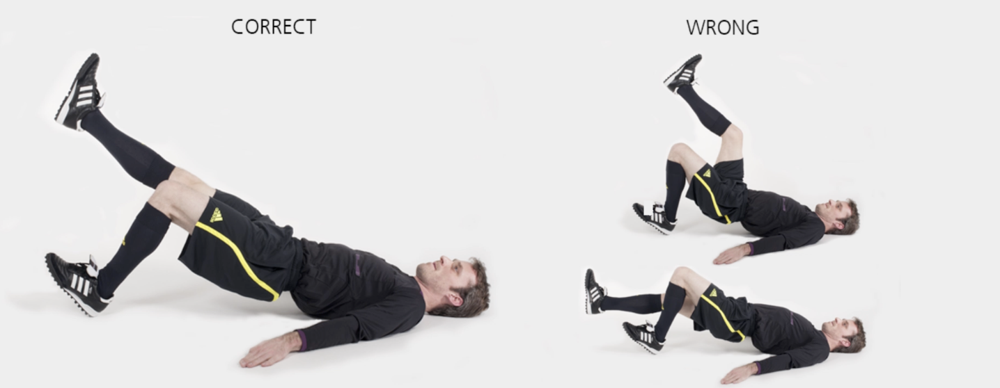
腘绳肌练习
本练习旨在增强大腿后侧肌群。
起始动作： 双膝与臀部同宽，跪在柔软的表面上；双臂交叉置于胸前。同伴跪在裁判员身后，双手抓住其脚踝上方，用身体重量将小腿压在地面上。
练习动作： 身体从头部到膝盖始终成一直线；缓缓向前倾斜，利用大腿后侧肌肉（腘绳肌）力量尽可能保持这一姿势。当无法再保持该姿势时，双手伸向地面进行缓冲，呈俯卧撑姿势。
次数： 1 组（ 10–15 次）
⚠️ 注意事项
- 同伴需将裁判员的小腿牢牢压向地面；
- 裁判员的头、上身和大腿应成一直线；
- 倾斜过程中只有膝关节可以活动；
- 刚开始时应缓慢进行此练习；一旦适应了该动作，就可以加快练习速度。
❌ 头部后仰
❌ 弯曲臀部
🎬 动作示范
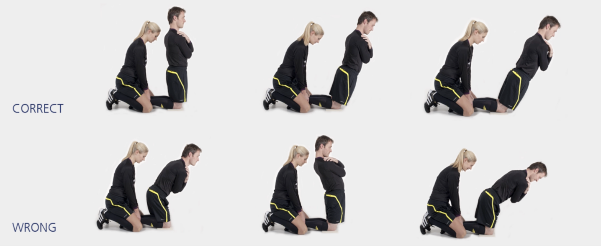
小腿肌肉练习
本练习旨在增强小腿肌群（和跟腱）。
起始动作： 单腿站立于木板或箱子的边缘，膝盖伸直。
练习动作： 脚尖站立，身体在竖直方向上缓慢上提/降低，降低时脚后跟需低于木板或箱子边缘。持续 20–30 秒，换另一只脚重复上述练习。裁判员可以使用棍子辅助支撑。
次数： 1 组（每只脚 20–30 秒）
⚠️ 注意事项
- 保持身体成一直线；
- 从正面看，支撑腿一侧的臀部、膝盖和脚应成一直线。
❌ 摇晃或拱起背部
❌ 弯曲支撑腿一侧的膝盖
✅ 骨盆保持稳定，不可倾斜
🎬 动作示范
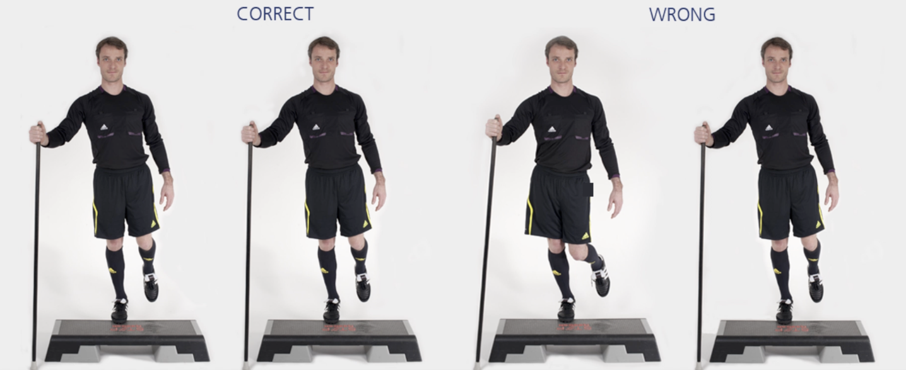
小跳
本练习旨在增强跳跃能力和身体控制。
起始动作： 双脚站立，与肩同宽，双手置于腰间。
练习动作： 尽可能快地向上跳起。跳起时，伸直整个身体。落地后不要停下，立刻再次跳起，持续 20-30 秒。
次数： 1 组（ 20–30 秒）
⚠️ 注意事项
- 从正面看，两侧臀部、膝盖和腿应成两条平行线；
- 跳起时，伸直膝盖，身体挺直；
- 起跳与落地时均前脚掌用力；
- 落地时膝盖适当弯曲。
❗️ 切忌膝盖内扣。
🎬 动作示范
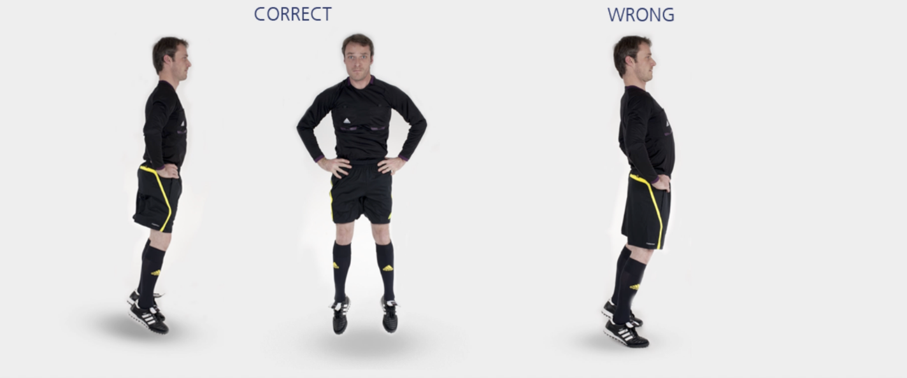
主裁 – 十字单腿跳
本练习旨在通过快速变向运动锻炼身体稳定性。
起始动作： 单腿站立，想象地上有一个十字标记，而裁判员站立于十字中央。
练习动作： 弯曲支撑腿一侧的髋关节、膝关节和踝关节。保持该姿势，依次向前、向后、向左、向右以及斜向跳跃。使用爆发力，尽可能快地跳动。落地时前脚掌轻轻着地，同时弯曲髋关节、膝关节和踝关节。练习过程中上身稍向前倾斜。单腿跳 30 秒，换另一条腿重复上述练习。
次数： 1 组（每侧 30 秒）
⚠️ 注意事项
- 从正面看，支撑腿一侧的臀部、膝盖和脚应在一条直线上；
- 起跳与落地时均前脚掌用力；
- 落地时弯曲髋关节、膝关节和踝关节；
- 与跳跃高度相比，起跳力度和落地缓冲更加重要。
❗️ 切忌膝盖内扣。
❗️ 落地时不要伸直膝盖或用脚后跟着地。
🎬 动作示范
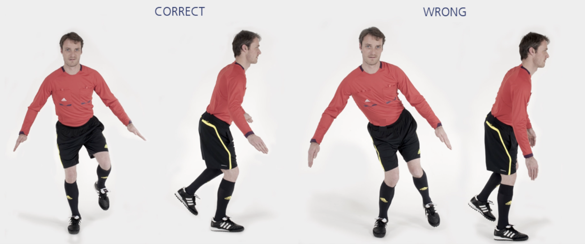
主裁 – 弓步跳
本练习旨在增强跳跃能力和身体控制。
起始动作： 前脚站立，另一条腿向后伸直。双手置于腰间。
练习动作： 屈膝下蹲成前弓步姿态，然后尽力向上跳起。落地前，交换前后腿位置，重复上述练习。持续 20-30 秒。
次数： 1 组（ 20-30 秒）
⚠️ 注意事项
- 挺直上半身；
- 骨盆保持水平；
- 起跳与落地时均前脚掌用力。
❗️ 切忌膝盖内扣。
🎬 动作示范
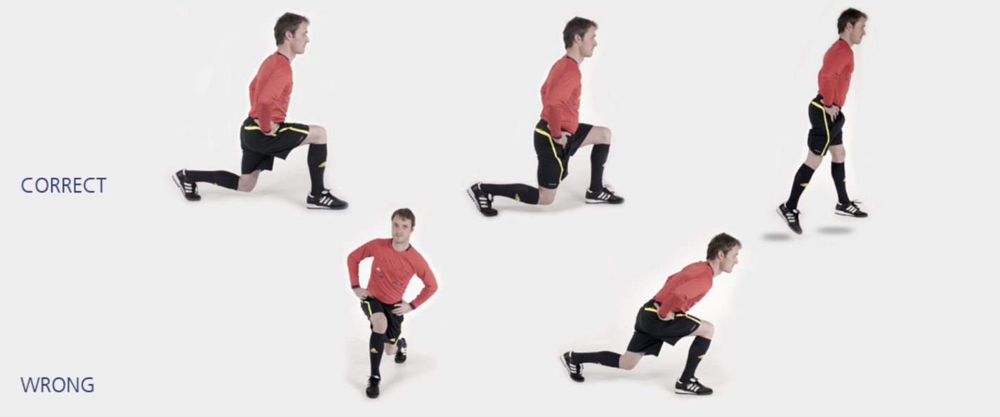
助理裁判员 – 90° 侧弓步
本练习旨在锻炼髋部和臀部肌群，同时增强身体控制。
起始动作： 双脚站立，与肩同宽；双手握拳，向前平举。
练习动作： 缓慢向侧面弓步。开始弓步时，缓慢弯曲臀部和膝盖，直到支撑侧的膝盖弯曲约 90 度。保持该姿势 1-2 秒，然后回到起始位置。向另一侧进行弓步。每一侧弓步 10 次。
次数： 1 组（每侧 10 次）
⚠️ 注意事项
- 支撑侧膝盖应弯曲至 90 度;
- 上身挺直;
- 骨盆保持水平。
❌ 膝盖内扣
❌ 上半身向前弯曲
❌ 扭转或倾斜骨盆
🎬 动作示范
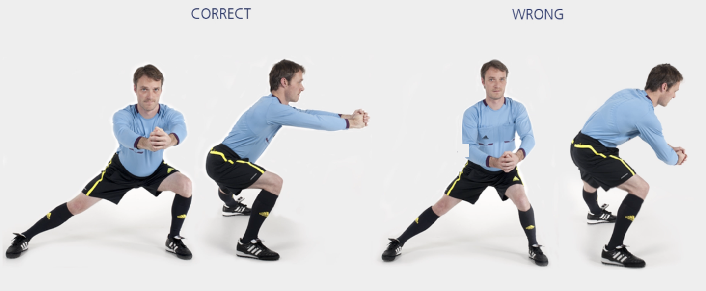
助理裁判员 – 侧向跳跃
本练习旨在增强单腿跳跃能力和身体控制。
起始动作： 单腿站立，略微弯曲髋关节、膝关节和踝关节，上半身向前倾斜。
练习动作： 支撑腿发力，向另一侧跳跃约 1 米，换腿支撑。落地时前脚掌轻轻着地，同时弯曲髋关节、膝关节和踝关节。保持该姿势约 1 秒，然后再次向同一侧跳跃。完成两次同向跳跃后，改变方向，重复上述练习。上半身面向前方，保持稳定；骨盆保持水平。重复 20–30 秒。
次数： 1 组（ 20–30 秒）
⚠️ 注意事项
- 从正面看，支撑腿一侧的臀部、膝盖和脚应在一条直线上;
- 落地时前脚掌轻轻着地，同时弯曲髋关节、膝关节和踝关节，上半身向前倾斜;
- 上半身面向前方，保持稳定;
- 骨盆保持水平，不可旋转或倾斜。
❌ 膝盖内扣
❌ 旋转上半身
🎬 动作示范
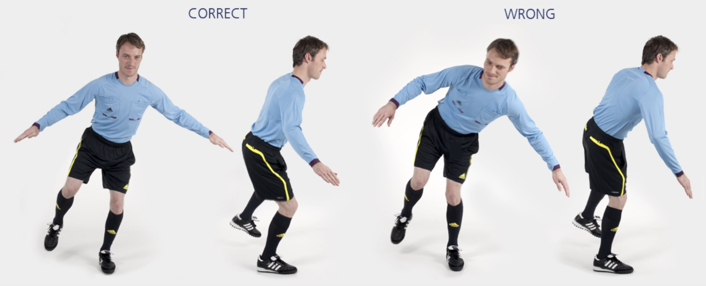
第三部分 跑动练习
1 渐进跑
2 冲刺跑
3 短对角线冲刺
4 长对角线冲刺
主裁–5 侧滑步+短距离快速跑
主裁–6 侧滑步+长距离快速跑
渐进跑
从起点出发，逐渐加速跑过最后一个标志筒。沿场地外侧慢跑返回。
✌️ 本练习需完成两次。
⚠️ 注意事项
- 上半身保持挺直；
- 臀部、膝盖和脚保持一直线。
❗️ 切忌膝盖内扣。
🎬 动作示范
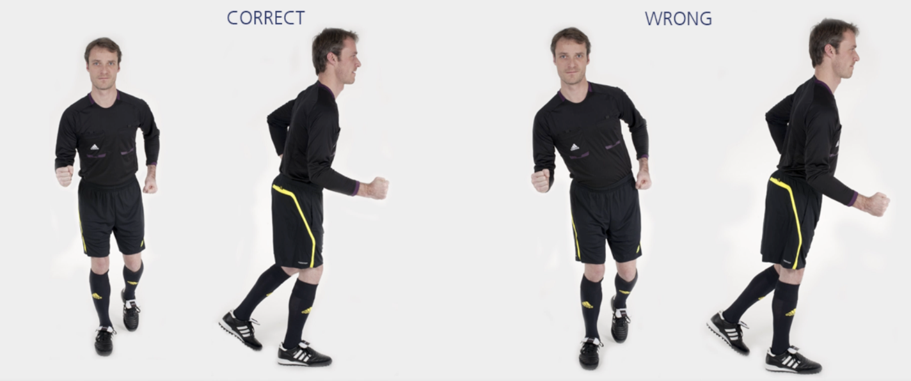
冲刺跑
从起点出发，以最大速度的 80-90% 冲刺过最后一个标志筒，沿场地外侧慢跑返回。
✌️ 本练习需完成两次。
⚠️ 注意事项
- 上半身保持挺直；
- 臀部、膝盖和脚保持一直线。
❗️ 切忌膝盖内扣。
🎬 动作示范
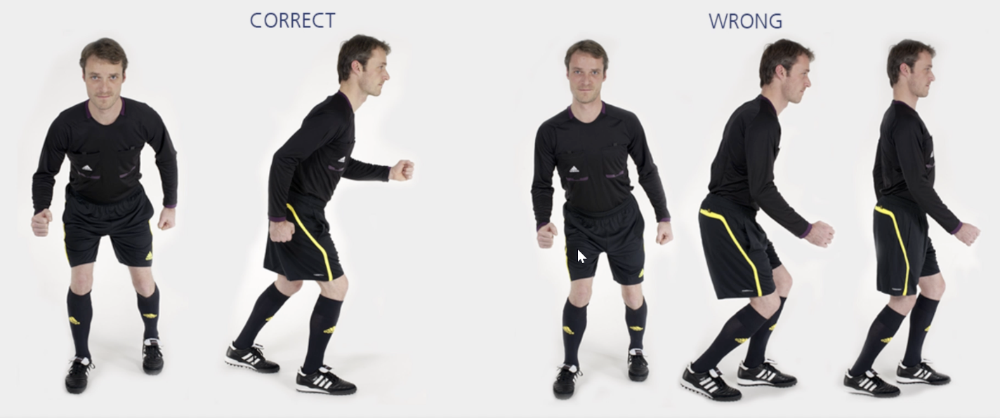
短对角线冲刺
在两列标志筒之间完成本练习：
从第一个标志筒出发，慢跑至下一个标志筒，加速跑至对侧下一个标志筒，减速慢跑至下一个标志筒，重复上述练习。最后沿场地外侧慢跑返回。
✌️ 本练习需完成两次。
⚠️ 注意事项
- 上半身保持挺直；
- 臀部、膝盖和脚保持一直线。
❗️ 切忌膝盖内扣。
➿ 跑动路线
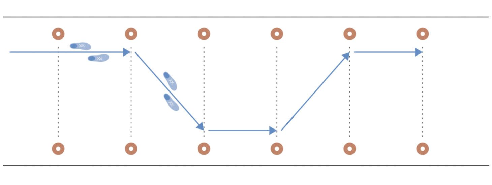
🎬 动作示范
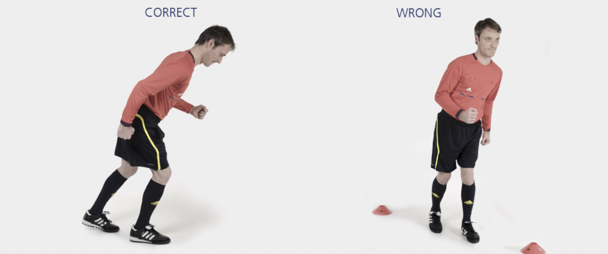
长对角线冲刺
在两列标志筒之间完成本练习：
从第一个标志筒出发，加速跑至对侧倒数第二个标志筒，然后慢跑完剩余路程。沿场地外侧慢速跑回。
⚠️ 注意事项
- 上半身保持挺直；
- 臀部、膝盖和脚保持一直线。
❗️ 切忌膝盖内扣。
➿ 跑动路线
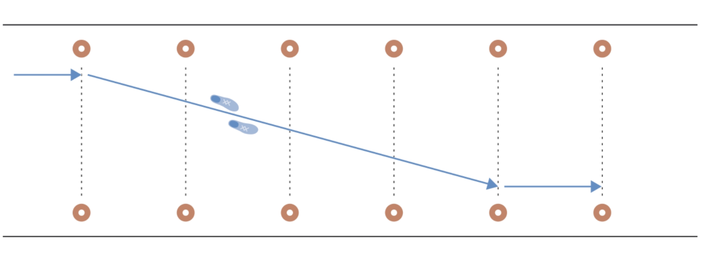
🎬 动作示范
主裁 – 侧滑步 + 短距离快速跑
从第一个标志筒出发，侧滑至第二个标志筒，快速跑至对侧下一个标志筒。重复上述侧滑步+快速跑交替练习。最后沿场地外侧慢速跑回。
✌️ 本练习需完成两次。
⚠️ 注意事项
- 臀部、膝盖略微弯曲，将身体重心置于前脚掌；
- 上半身保持挺直。
❗️ 切忌膝盖内扣。
🎬 动作示范

主裁 – 侧滑步 + 长距离快速跑
从第一个标志筒出发，侧滑至第二个标志筒，以最大速度的 80-90% 快速跑至对侧倒数第二个标志筒，然后逐渐减速。沿场地外侧慢速跑回。
✌️ 本练习需完成两次。
⚠️ 注意事项
- 臀部、膝盖略微弯曲，将身体重心置于前脚掌；
- 上半身保持挺直。
❗️ 切忌膝盖内扣。
🎬 动作示范
结束语
《FIFA 11+（裁判员版）》是一个完整的热身项目，旨在减少男女裁判员和助理裁判员的伤病情况。
该项目由国际专家组根据 “FIFA 11+ 伤病预防项目” 以及裁判员特有的伤病情况开发而成。研究表明，每周至少练习两次 FIFA 11+ 能够减少队内 30-50% 的伤病。
该项目可以作为训练开始时的热身运动，每周至少练习两次，完成一次大约需要 20 分钟。如果将其作为赛前热身，则只需要完成第一部分和第三部分的跑动练习。
对于所有的练习来说，正确的执行都非常重要。因此，教练（讲师）应当对训练加以监督，必要时纠正裁判员的动作。